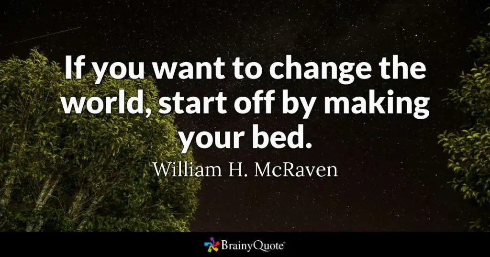
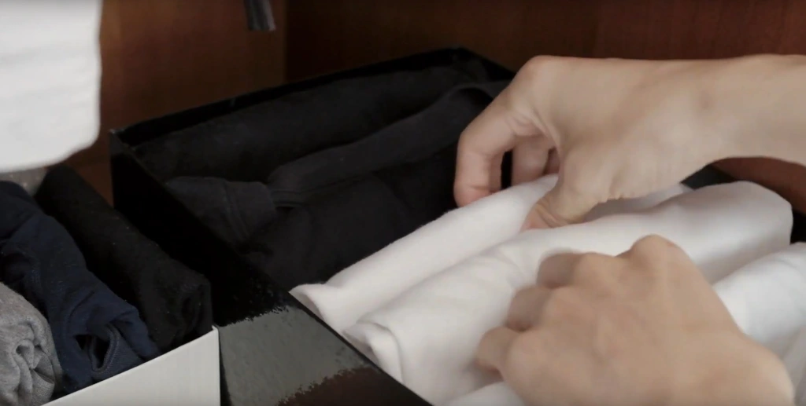
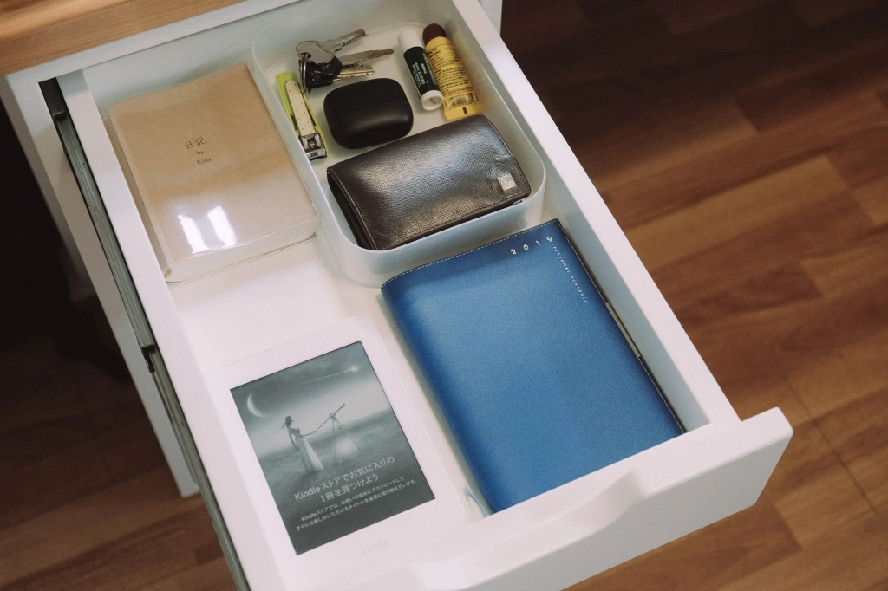
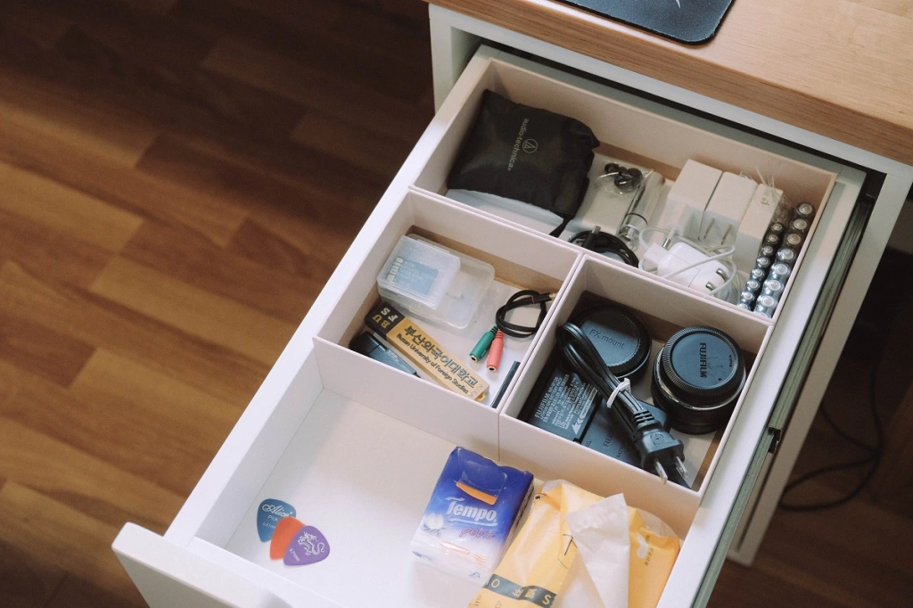

5 THÓI QUEN NHỎ GIÚP MÌNH CÓ ĐƯỢC MỘT CUỘC SỐNG GỌN GÀNG VÀ NGĂN NẮP
Viết xong bài tổng kết tháng 11 từ cách đây 2 hôm rồi, những mình vẫn muốn viết thêm cái gì đó, khác khác một chút. Chợt nhớ lâu rồi mình chưa viết về chủ đề tối giản hay là dọn dẹp. Vì vậy mình quyết định sẽ viết thêm một bài ngắn gọn chia sẻ về những thói quen “nho nhỏ” đã và đang giúp mình có được một cuộc sống ngăn nắp gọn gàng. Đây đều là những việc làm rất đơn giản, không có gì phức tạp hay tốn thời gian, thế nên hãy áp dụng ngay nếu bạn thấy phù hợp nhé.

1. Dọn chăn ga sau khi dậy
Có 2 lợi ích đến từ việc dọn chăn ga giường mỗi sáng. Thứ nhất, hiển nhiên là nó giúp giường bạn trông gọn gàng hơn. Về lợi ích thứ 2 thì mình xin phép được trích một đoạn trong cuốn sách “Nếu muốn thay đổi thế giới, hãy bắt đầu bằng việc dọn chăn ga” của tướng sĩ người Mỹ William McRaven. Nếu bạn hoàn thành việc dọn chăn ga mỗi sáng, nó đồng nghĩa với việc bạn hoàn thành một nhiệm vụ đầu tiên trong ngày. Bạn cảm thấy tự hào một chút, và điều này sẽ thúc đẩy bạn tiếp tục làm công việc này cho đến công việc khác. Việc dọn chăn ga cũng cho ta thấy rằng, những công việc tưởng chừng nhỏ nhặt nhưng lại rất quan trọng trong cuộc sống chúng ta. Nếu bạn không thể hoàn thành những công việc nhỏ, làm sao bạn có thể hoàn thành một công việc lớn lao? Và nếu có một hôm bạn cảm thấy mệt mỏi, thì khi về nhà, trước mặt bạn sẽ là chiếc giường đã được trải chăn ga ngay ngắn.

2. Lăn
Lăn ở đây ý mình là cái cây lăn bụi nhỏ mà thường hay dùng để lăn bụi quần áo. Nhưng không chỉ quần áo mà mình còn dùng cây lăn này để làm sạch chăn ga gối, và đôi khi mình cũng lăn dưới góc sàn nhà hoặc thảm, nơi mình cảm thấy có nhiều bụi bặm. Mình mua cây lăn này ở cửa hàng đồng giá Nhật Bản Daiso. Bạn cũng có thể lên trên tiki hay shoppee để tìm kiếm chiếc cây lăn nhỏ mà có võ này.

3. Cài cúc áo sơ mi mỗi khi treo
Mình biết nhiều bạn sẽ cảm thấy lười khi mỗi lần treo áo sơ mi là phải cài cúc. Hồi trước mình cũng lười cài khi treo lắm, và điều này khiến cho áo sơ mi không được treo thẳng tắp, đôi khi bị vướng với quần áo treo trước sau, và nhìn trông cũng mất thẩm mỹ. Hiện tại thì mình đã tạo được thói quen cài cúc áo khi treo, thậm chí mình còn chịu khó cài cả cúc trên cùng, vị trí khó bấm nhất. Thường mình sẽ cài cúc trên cùng, cúc thứ 2 và cúc dưới cùng để giúp áo sơ mi có được một khuôn gọn đẹp như các chiếc áo khác.

4. Gấp quần áo gọn gàng và đặt vào đúng vị trí trong tủ
Từ hồi đọc cuốn sách của Marie Kondo, suy nghĩ về cách gấp và sắp xếp quần áo của mình thay đổi 360 độ. Giờ đây mình luôn cố gắng đặt quần áo đúng vào các hộp đựng mà mình tự tạo. Ví dụ như mình lấy hộp giày để đựng áo cộc, hộp bánh kẹo có các ngăn để đựng tất,… Lưu trữ quần áo theo kiểu đứng dọc này sẽ giúp mình dễ lấy đồ hơn, cũng như giúp mình quản lý tủ quần áo một cách hiệu quả.

5. Để lại các món đồ về vị trí mặc định sau mỗi lần dùng
Đây là thói quen mà mình nghĩ là nó rất có ích, lí giải vì sao bàn mình luôn gọn gàng không bừa bộn.
Để có thể thực tiện thói quen này thì bạn phải tạo cho bản thân 2 quy tắc.
Quy tắc 1: Bạn nên tìm một chỗ, một vị trí cố định để đặt các đồ vật và xác định đó là chỗ mặc định của món đồ đó.
Thường thì mình sẽ tận dụng 1,2 ngăn kéo trên cùng của chiếc bàn để tạo ra những “chỗ ở” riêng cho các món đồ mình hay dùng. Ngăn kéo trên cùng bên trái là nơi đặt những đồ dùng mà mình thường xuyên sử dụng nhất, bao gồm cuốn sổ nhật ký (màu nâu), máy đọc sách kindle paperwhite, sổ tay cá nhân (màu xanh nước biển), hộp bút, ví tiền, chìa khóa, tai nghe và… thỏi dưỡng môi.

Những món đồ cùng thể loại thì mình cũng sẽ phân chia và đặt cùng nhau trong 1 ngăn cố định. Ví dụ như ngăn kéo trên cùng bên phải là nơi mình để những đồ vật công nghệ nhỏ liên quan đến máy tính, máy ảnh.

Quy tắc 2: sau mỗi lần dùng thì phải trả lại về đúng vị trí ban đầu (vị trí mặc định)
Sáng sớm sau khi dậy mình sẽ ngồi vào bàn, lấy sổ nhật ký và sổ tay ra để viết và lập kế hoạch, sau đó sẽ đặt lại vào ngăn bàn. Những lúc nào cần đem theo ra ngoài đường thì mình lại lấy ra, bỏ vào balo, sau đó khi về nhà thì lại đặt vào đúng vị trí cũ.
Marie Kondo cũng đã gợi ý rằng, sau mỗi lần về nhà bạn hãy lấy hết toàn bộ đồ vật trong cặp ra, và đặt nó lại vào các vị trí ban đầu. Những người không có thói quen này thường sẽ để nguyên đồ đạc trong balo, hoặc là lấy ra nhưng để tạm trên bàn. Thế rồi món đồ nào cũng cứ để tạm, và dần dần nó chất đống, đến khi muốn tìm một đồ nào đó thì cũng rất khó để có thể tìm thấy ngay.
Từ hồi tạo được thói quen này thì khi về nhà sau một ngày đi học dài, mình vẫn chịu khó lấy hết đồ trong balo ra, đôi khi có để tạm tất cả đống đó trên mặt bàn, nhưng chỉ được phép “để tạm” trong 5 phút, sau đó sắp xếp và đặt lại vào chỗ ban đầu. Điều này cũng tương tự với quần áo, khi mình luôn cố gắng treo quần áo ngay sau mỗi lần thay, tránh việc ném lên giường và “để tạm” ở đó.
Kết
Trong 5 thói quen này, mình suggest cho các bạn tập thói quen 1, 4 và 5, đặc biệt là số 5. Vì đây đều là những thói quen nhỏ nên mình tin là các bạn sẽ áp dụng được ngay vào cuộc sống hàng ngày. How about tomorrow? Sáng mai dậy, hãy thử trải chăn một cách ngay ngắn sau khi dậy. Hãy cài cúc cho những áo sơ mi đang treo. Hãy dọn dẹp bàn học, và đặt các món đồ vào những vị trí nhất định. Đi học hay đi làm về thì nhớ đừng “để tạm” lâu quá, hãy cố gắng cất ngay vào chỗ cũ nếu có thể.
Good luck!
Kira


COMMENT
Tarobam 1 ngày trước
Ah the memories of watching Shelter for the first time, and now to re-live the feeling with Hiyumi singing it.
Justin Y. 1 ngày trước
Imagine traveling back decades and explaining to him that in the future, hundreds of thousands of people will be listening to his song on a supercomputer with a picture of a Japanese cartoon.
DigiNeko 2 ngày trước
Classic Masterpiece.